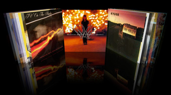
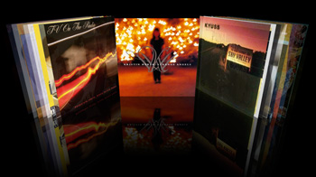

Browsing your music - CoverFlow
Probably the worst way to browse through a music collection is by having to read through long lists of words. The web is rife with them, like this. Part of the joy of collecting music has always been to be able to interact with it physically, to hold an album in your hand, to read the liner notes, to arrange it, to show it off. In the digital world, all you really can do is to show people your iPod, it is not the same. I think that we'll start seeing some attempts at bringing back some of the pleasure that comes with interacting with your music collection. One attempt is CoverFlow Coverflow allows you to browse through your album collection and interact with it, just like you use to be able to do. It is quite slick (although it is still in beta, requires a Mac and crashes a lot). It does remind me a bit of the looking glass CD app that was demonstrated a few years back. Here's a picture of coverflow - click to see a video of CoverFlow in actions:
CoverFlow Movie

CoverFlow - The first of the next wave of apps to make interacting with your music much more enjoyable.

CoverFlow - The first of the next wave of apps to make interacting with your music much more enjoyable.